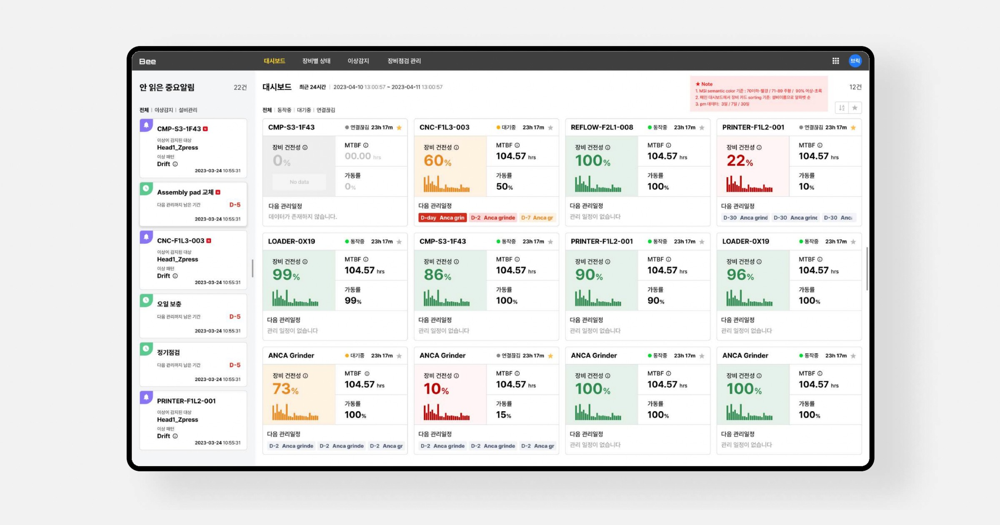
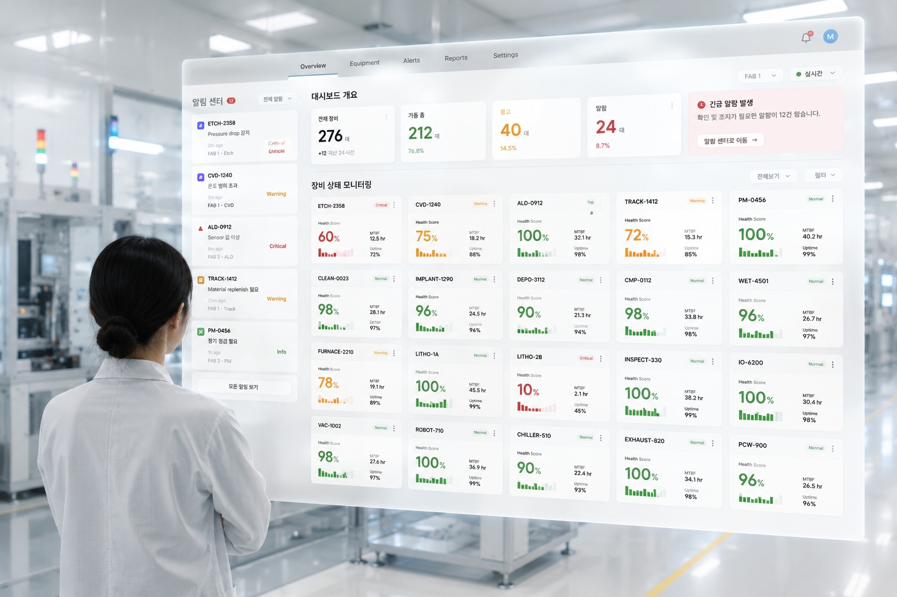
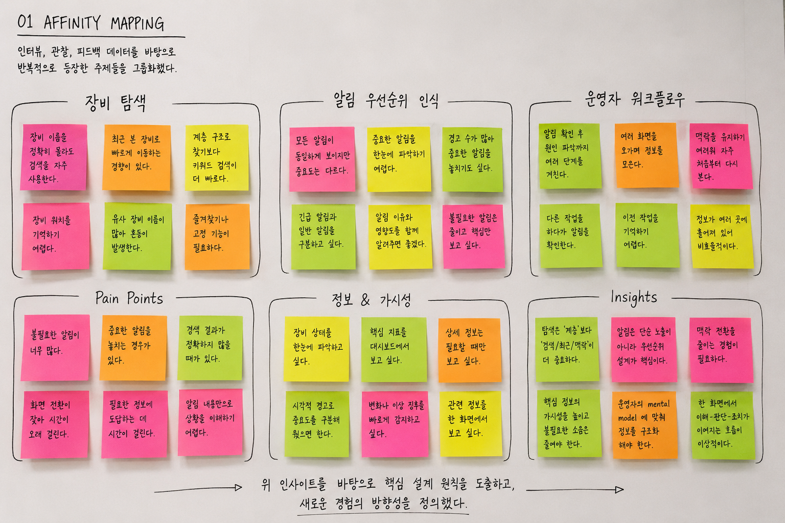
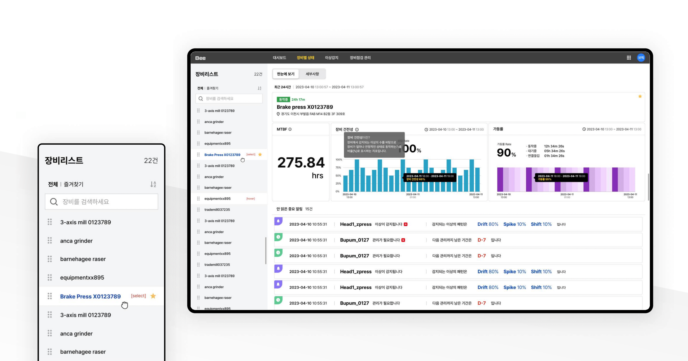
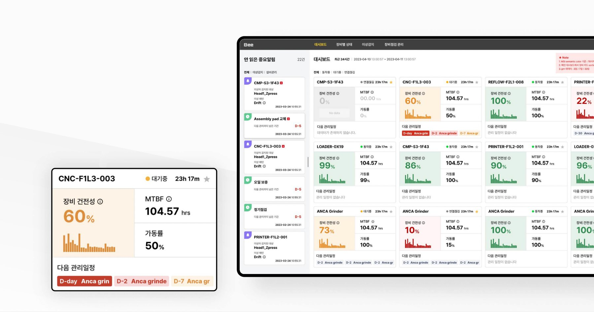
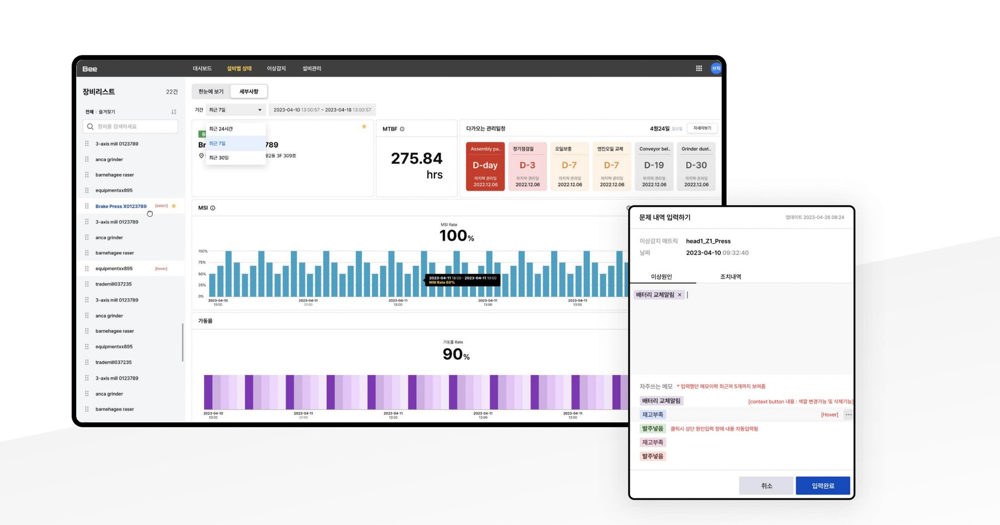
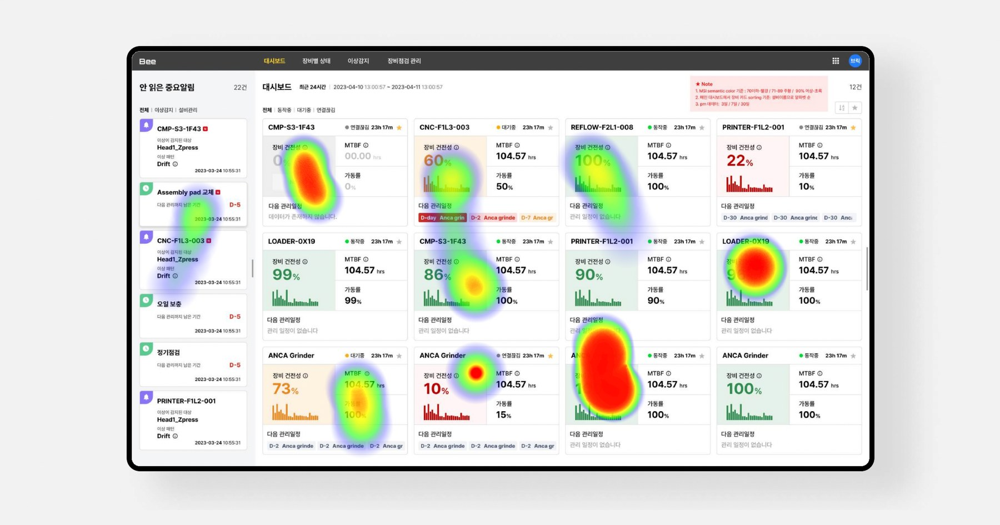

A real-time equipment monitoring dashboard (Bee) that turns scattered alerts into a single, prioritized workflow.

I designed Bee, an equipment notification and monitoring system sold to manufacturing companies including SK hynix. The product visualizes complex, real-time equipment data and surfaces the issues that actually need a human's attention.

Green means go. Yellow means look closer.
Never make anyone guess.
Operators had access to all the data they needed, but not the clarity to understand what required attention first. Critical alerts were often buried among routine notifications, making quick decision-making increasingly difficult.
The goal was to reduce cognitive load by presenting only the most relevant information, allowing operators to recognize priorities and take action faster.
Before exploring interface solutions, I focused on understanding how operators monitored equipment, responded to anomalies, and searched for information throughout their daily workflow. Through interviews, workflow analysis, and collaborative discussions with domain experts, several behavioral patterns consistently emerged.

Rather than navigating complex equipment trees, operators relied on search, recently viewed equipment, and production context to locate information quickly.
Users mentally separated notifications into critical, monitor, and ignore. Existing interfaces treated every alert equally, increasing cognitive load.
Investigating a single anomaly often required opening multiple pages before enough context was available to make a decision.
Research findings were translated into three assumptions that guided our design decisions before moving into interface exploration.
If critical alerts are surfaced before secondary information, operators will recognize urgent issues faster.
If monitoring and issue reporting happen in one continuous workflow, unnecessary navigation will decrease.
If equipment status can be understood at a glance, cognitive load during monitoring will be reduced.
Rather than displaying every piece of equipment data equally, the dashboard was designed around user workflows—prioritizing critical information, reducing unnecessary navigation, and helping operators move from detection to action as quickly as possible.

In detailed user tests, we found that users did not want to dig through a category tree to find the equipment they needed. The result is a simple list where operators can pin priority items to the top or bottom and use context search to find what they need right away.

Working with analysts, we identified and prioritized the hierarchy of essential data to display, incorporating a variety of colors to avoid monotony while keeping clarity intact. Status, MTBF, and uptime are all organized within each card, so it says a lot without saying too much.

The anomaly input popup lets operators record issues and related information immediately when an anomaly occurs, with an auto-suggestion feature that retrieves existing issue records or lets them add new related data on the spot.
The UI was designed with a workflow-centric approach that let users interpret data quickly and eliminated unnecessary steps to make decision-making easier. The redesigned interface highlighted easy access to critical data and integrated real-time alerts seamlessly, easing the day-to-day cognitive load of triaging alerts.
Average response time
Time to locate the right equipment

Real-time monitoring tools live or die by what they don't show. Bee's biggest wins came from cutting screens, not adding them.